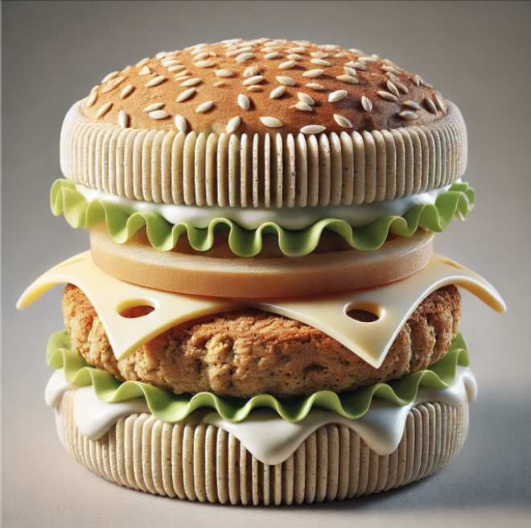

Instructions for Making the Burger
Step 1: Print the Burger Bun
• Select the dough material and ensure it is at 180°C–200°C.
• Print the bottom bun layer first, followed by the top bun.
• Use a simple flat or round design, or add artistic patterns.
Step 2: Print the Plant Based Patty
• Switch to the patty mixture.
• Set the extrusion temperature to 80°C–100°C
• Print the patty in a circular shape, layer by layer, to create a fibrous texture resembling meat.
Step 3: Add Vegetables
• Switch to the patty mixture.
• Set the extrusion temperature to 80°C–100°C